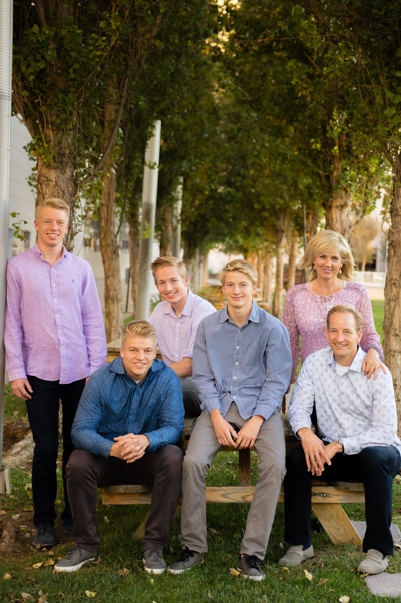
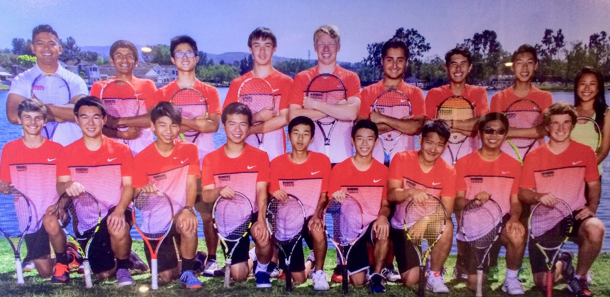
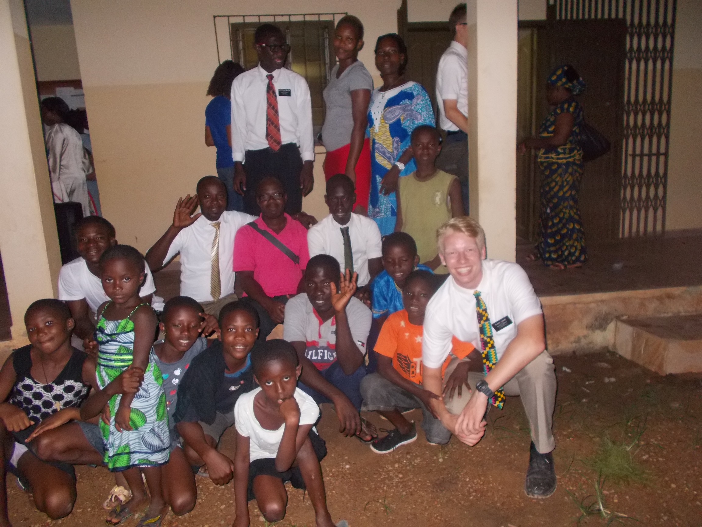
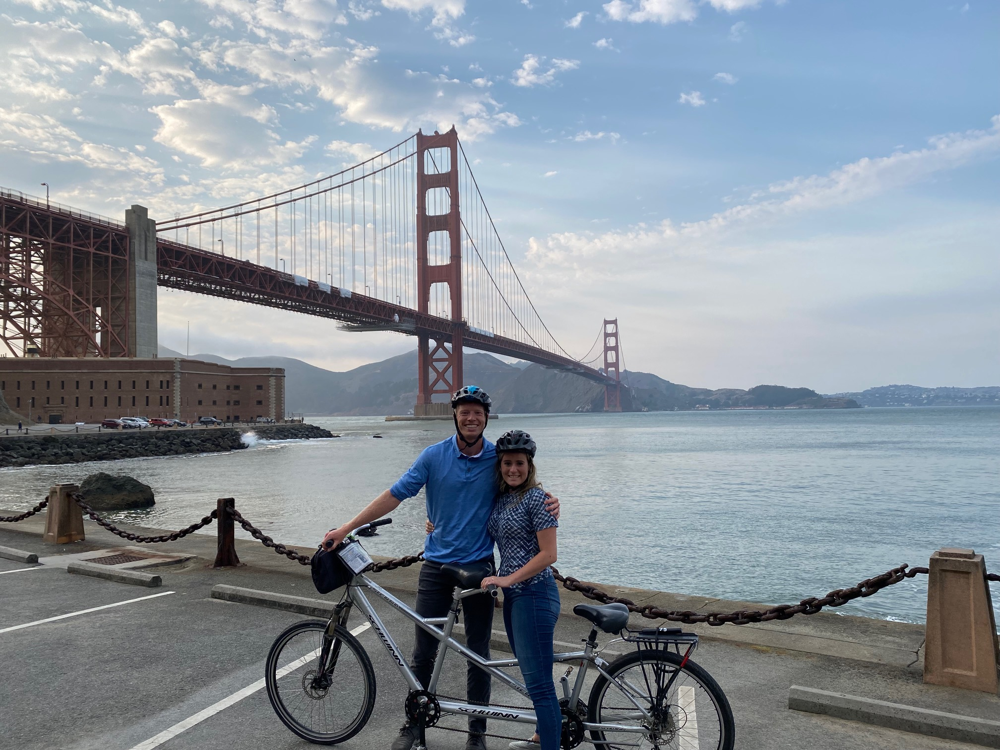

Timeline of My Life
I love my Family, tennis, Cote d'Ivoire, and vacation.
I am the 3rd of 4 boys. My Mom has 3 older brothers and no sisters; I guess tolerating boys is her calling in life. My family and I love to do everything active together.
I grew up my whole life in Orange County, CA and I loved being in the outdoors. I went to Elementary School at Anderson Elementary, go Dolphins. My favorite subject in school was math, I knew I wanted a career that worked with numbers and people.
High School

My family moved from Newport to Irvine while I was in middle school. While still living in Irvine, I attended Woodbridge High School. I loved playing basketball and Tennis. My Senior year, our school's team cracked the top 15 in the Nation for HS Tennis.
When I was 19 years old, I had the incredible opportunity to serve as a missionary for theThe Church of Jesus Christ of Latter-day Saints in Cote d'Ivoire. While there, I lived with Congolese, Ivoirien, Ghanaian, and Nigerian missionaries. I learned french, helped clean and build communities, and taught people of the blessings of the gospel of Christ.
In February 2021 I met Ashley Bayles, a lovely girl in the music department at BYU. We fell in love, got engaged, and married. In August 2021 we went on a trip to San Franciso where we biked to the Golden Gate Bridge. We also took time to eat plenty of delicious shrimp at Bubba Gump Shrimp Co., and we also ate lots of dessert!
Fun Fact :
My favorite movie growing up was Space Jam. When word came out about a Space Jam 2 with Lebron, I watched the trailer over and over again! Check out the trailer below: